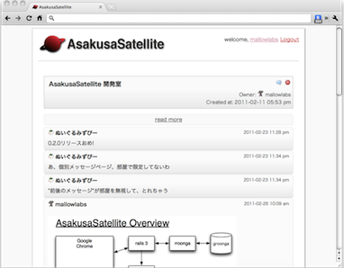
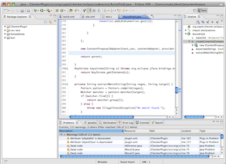
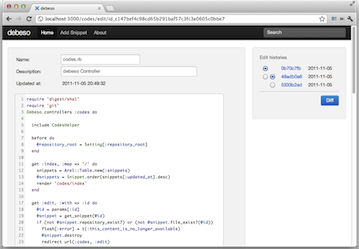
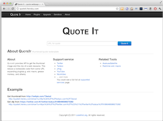
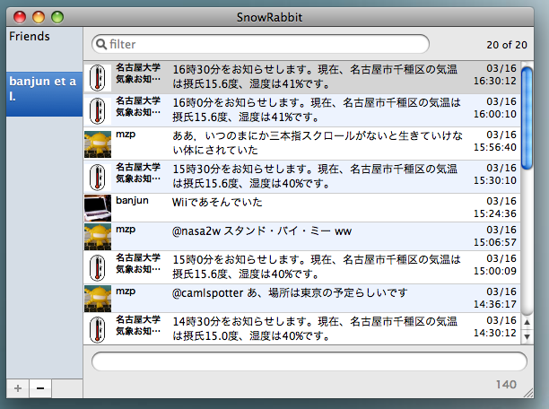

codefirst とは
codefirst は自分たちを含めた世界中のコーダーが、 ステキなコードを楽しく書くことを目指して日々プログラムを書いています。 ソフトウェア開発を楽しくするツールをオープンソースで公開しています。
プロダクト
AsakusaSatellite | A realtime chat application for Developers
AsakusaSatellite は、開発者向けのリアルタイムチャットア プリケーションです。開発者間のコミュニケーション品質を向上 し、ソフトウェア開発にリズムをもたらします。
KariyaSiesta | A flexible coding style checker for C
KariyaSiesta は、C 言語向けのコーディングチェッカ CX-Checker の fork プロジェクトです。 コーディング規約はXpathを用いて簡単に拡張できます。
debeso | A snippet stock application for Developers
debeso は、開発者向けのスニペットストックです。開発者間の 知識を共有し、知識が行方不明になることを防ぎます。
QuoteIt | thumbnail/quote boilerplate
QuoteItは各種Webサービスの埋め込み用HTMLを統一的に取得できるWebAPIです。バックエンドにwedataを採用しているため、誰でも引用元を簡単に追加可能です。
SnowRabbit | Tweet with the desktop rabbit
OSX用のTwitterクライアントです。Mac OS X Snow Leopard/Lionで動作します。 following(friend)のグループ化表示ができるので、大勢followしている人にお勧めです。
Chrome Extensions
Redmine Plugins
Jenkins Plugins
リポジトリ
メンバ
@atsumin
ソースコード解析のスペシャリストにしてcodefirstのトップ。
ソフトウェア開発支援に関する研究を行っている。
@suer
最速さん。codefirst プロダクトのプロトタイプ開発全般を担当する。
作りはじめてから動くものが出来るまでが異常に速い。
ただし、本当に速いのは作り始めてから飽きるまでの時間だという説もある。
@mzp
みずぴーさん。
@suer が飽きた後のプロダクトをリリースレベルまで持っていく際の実装を担当する。
驚異的スピードで実装を進める。
private なチャットを Twitter に流すスピードも驚異的なため、
codefirst 内の行動には気をつけなければいけない。
@mallowlabs
タンポポさん。@suer & @mzp が勢いで作ったプロダクトの自動ビルド環境や
README の記述、CSS の調整、ロゴの作成、ノウハウの文書化など、
タンポポを刺身に乗せるような仕事を担当する。
codefirstのプロダクトアイデアの大半は彼の妄想が元である。
@shimomura1004
しもきんすさん。
@suer & @mzp が勢いで作った挙句、放置されたバグの修正を担当する。
また、知らぬ間に素敵機能が増えている時は、
しもむらさんの仕業だと思って間違いない。
本業では、Jenkins のおっさんもびっくりするようなビルド作業をこなすため、
しもきんすさんと呼ばれている。
@banjun
ばんじゅんさん。iOS Developer。codefirst のプロダクトの
iPhone/iPad アプリの開発を担当する。「AsakusaSatellite の
iPhone アプリ作ってよ」と @mzp に無茶ぶりされた際、
一日で push 通知機能付きのアプリを開発したスーパーハカーである。
現在はジョブズのことを想い、喪に服している。
@rednes
どねすさん。趣味はサイクリング。休みの日には
数十キロの道のりをサイクリングして過ごすというリア充な面と、
「座椅子 on ベッドは全てがベッドで完結するから最強」
と言い張るひきこもりな面の両面を併せ持つ。
@kumattau
くまったうさん。数々の伝説を持つ「伝説の男」である。
マクドナルドでは「テイクオフ」するクールガイ。
C 言語による難しい実装を軽々とこなすハッカーである。